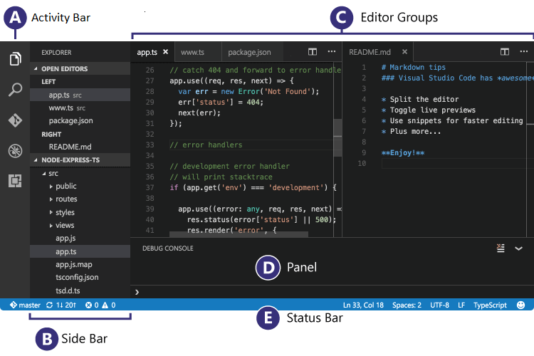
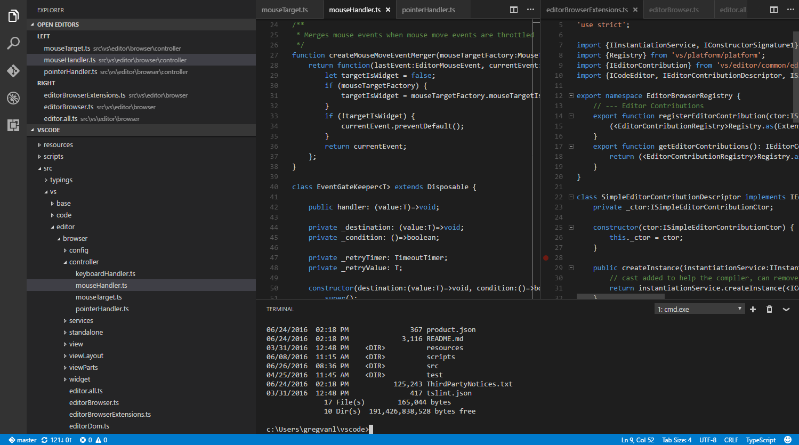
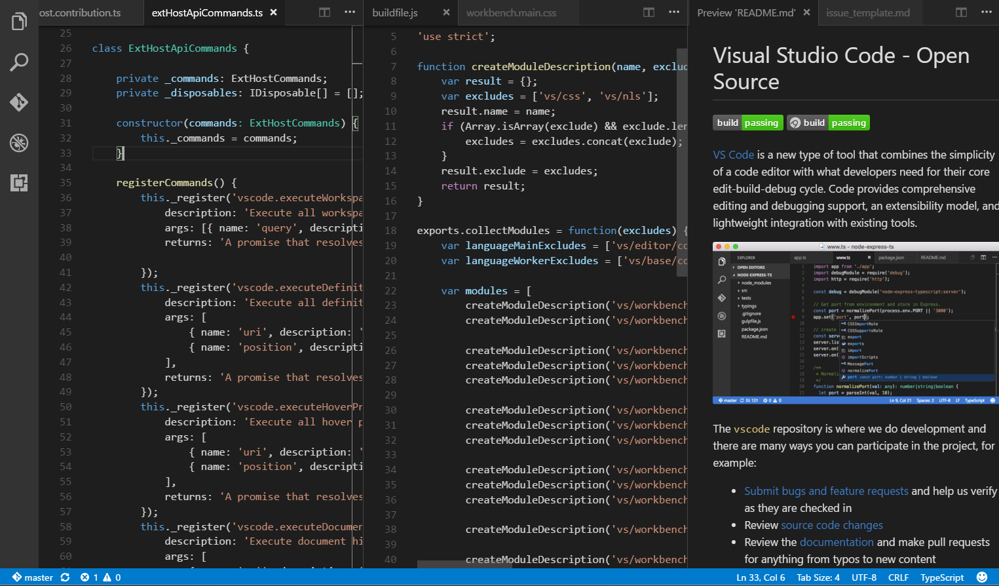
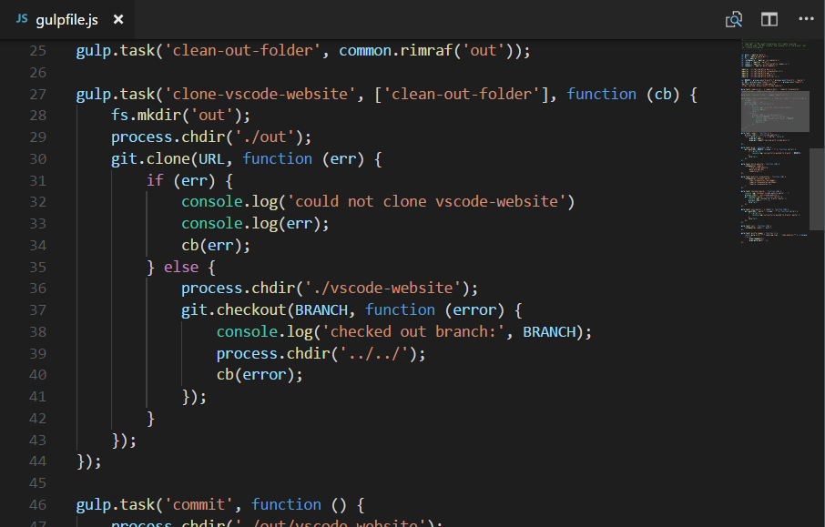
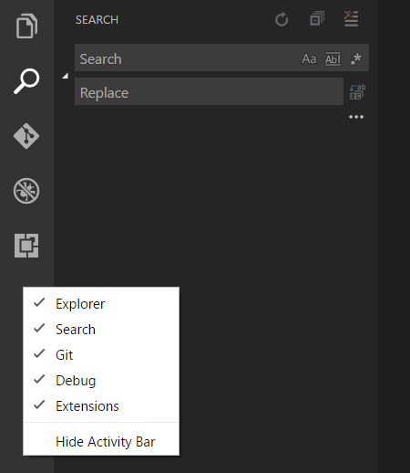
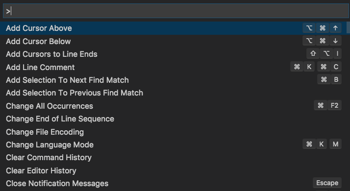
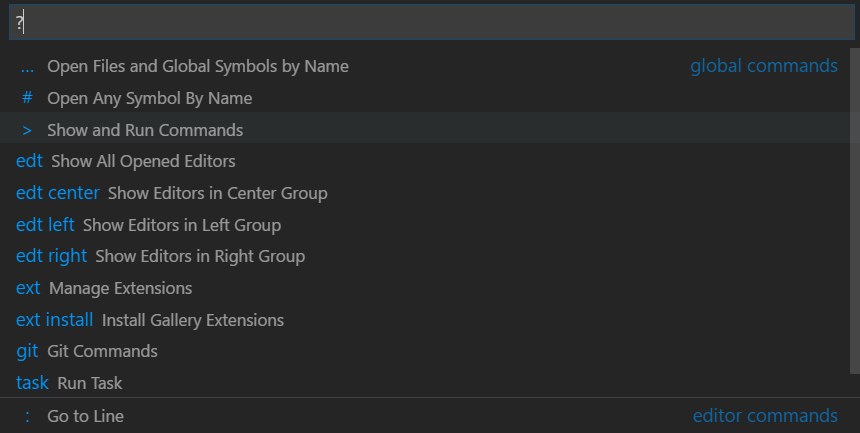
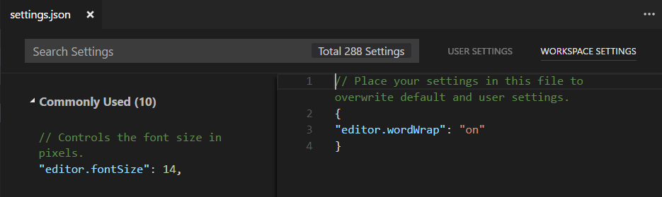
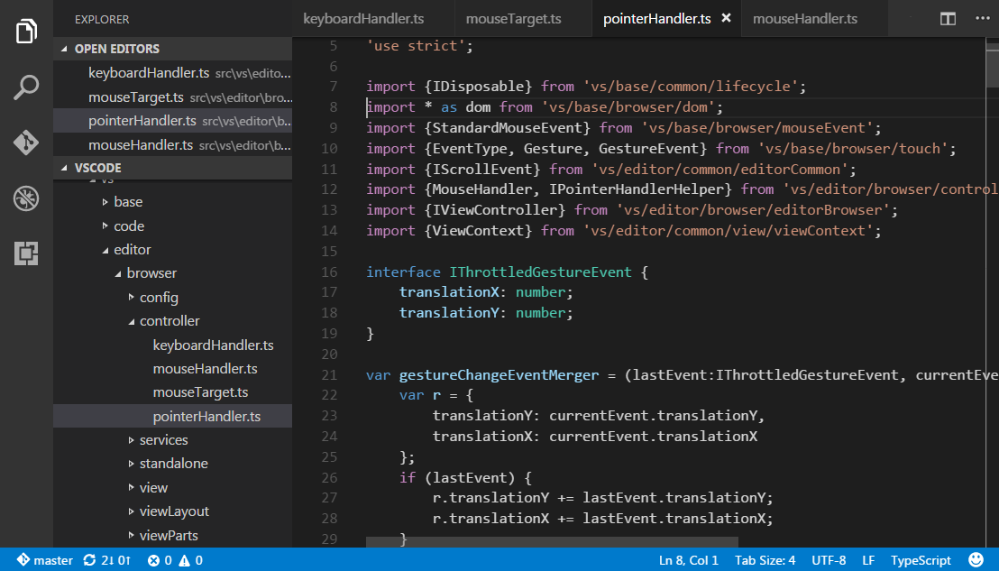
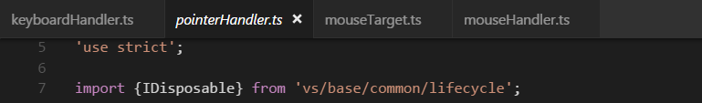

User Interface
At its heart, Visual Studio Code is a code editor. Like many other code editors, VS Code adopts a common user interface and layout of an explorer on the left, showing all of the files and folders you have access to, and an editor on the right, showing the content of the files you have opened.

Files, Folders & Projects
VS Code is file and folder based - you can get started immediately by opening a file or folder in VS Code.
On top of this, VS Code can read and take advantage of a
variety of project files defined by different frameworks and
platforms. For example, if the folder you opened in VS Code
contains one or more package.json,
project.json, tsconfig.json, or .NET
Core Visual Studio solution and project files, VS Code will
read these files and use them to provide additional
functionality, such as rich IntelliSense in the editor.
Basic Layout
VS Code comes with a simple and intuitive layout that maximizes the space provided for the editor while leaving ample room to browse and access the full context of your folder or project. The UI is divided into five areas:
- Editor - The main area to edit your files. You can open up to three editors side by side.
- Side Bar - Contains different views like the Explorer to assist you while working on your project.
- Status Bar - Information about the opened project and the files you edit.
- Activity Bar - Located on the far left-hand side, this lets you switch between views and gives you additional context-specific indicators, like the number of outgoing changes when Git is enabled.
- Panels - You can display different panels below the editor region for output or debug information, errors and warnings, or an integrated terminal.
Each time you start VS Code, it opens up in the same state it was in when you last closed it. The folder, layout, and opened files are preserved.

Open files in each editor are displayed with tabbed headers (Tabs) at the top of the editor region. To learn more about tabbed headers, see the Tabs section below.
Tip: You can move the Side Bar to the right hand side (View > Move Side Bar Right) or toggle its visibility (
kb(workbench.action.toggleSidebarVisibility)).
Side by Side Editing
You can have up to three editors open side by side. If you already have one editor open, there are multiple ways of opening another editor to the side of the existing one:
-
kbstyle(Ctrl)(Mac:kbstyle(Cmd)) click on a file in the Explorer. -
kb(workbench.action.splitEditor)to split the active editor into two. - Open to the Side from the Explorer context menu on a file.
- Click the Split Editor button in the upper right of an editor.
- Drag and drop a file to the either side of the editor region.
-
kbstyle(Ctrl+Enter)(Mac:kbstyle(Cmd+Enter)) in the Quick Open (kb(workbench.action.quickOpen)) file list.

Whenever you open another file, the editor that is active will display the content of that file. So if you have two editors side by side and you want to open file 'foo.cs' into the right hand editor, make sure that editor is active (by clicking inside it) before opening file 'foo.cs'.
When you have more than one editor open you can switch between
them quickly by holding the kbstyle(Ctrl) (Mac:
kbstyle('Cmd')) key and pressing
kbstyle(1), kbstyle(2), or
kbstyle(3).
Tip: You can resize editors and reorder them. Drag and drop the editor title area to reposition or resize the editor.
Minimap - outline view
A Minimap (outline view) gives you a high level overview of your source code which is very useful for quick navigation and code understanding. A file's minimap is shown in the right side of the editor. You can click or drap the shaded area to quickly jump to different sections of your file.

If you would like to disable minimap, you can set
"editor.minimap.enabled": false in your user or
workspace
settings.
Indent Guides
The image above also shows indentation guides (vertical lines)
which help you quickly see matching indent levels. If you
would like to disable indent guides, you can set
"editor.renderIndentGuides": false in your user
or workspace
settings.
Explorer
The Explorer is used to browse, open, and manage all of the files and folders in your project.
After opening a folder in VS Code, the contents of the folder are shown in the Explorer. You can do many things from here:
- Create, delete, and rename files and folders.
- Move files and folders with drag and drop.
- Use the context menu to explore all options.
Tip: You can drag and drop files into the Explorer from outside VS Code to copy them.

VS Code works very well with other tools that you might use, especially command-line tools. If you want to run a command-line tool in the context of the folder you currently have open in VS Code, right-click the folder and select Open in Command Prompt (or Open in Terminal on Mac or Linux).
You can also navigate to the location of a file or folder in the native Explorer by right-clicking on a file or folder and selecting Reveal in Explorer (or Reveal in Finder on the Mac or Open Containing Folder on Linux).
Tip: Type
kb(workbench.action.quickOpen)(Quick Open) to quickly search and open a file by its name.
By default, VS Code excludes some folders from the Explorer
(for example. .git). Use the
files.exclude
setting
to configure rules for hiding files and folders from the
Explorer.
Tip: This is really useful to hide derived
resources files, like \*.meta in Unity, or
\*.js in a TypeScript project. For Unity to
exclude the \*.cs.meta files, the pattern to
choose would be: "**/*.cs.meta": true. For
TypeScript, you can exclude generated JavaScript for
TypeScript files with:
"**/*.js": {"when": "$(basename).ts"}.
Open Editors
At the top of the Explorer is a section labeled OPEN EDITORS. This is a list of active files or previews. These are files you previously opened in VS Code that you're working on. For example, a file will be listed in the OPEN EDITORS section if you:
- Make a change to a file.
- Double-click a file's header.
- Double-click a file in the Explorer.
- Open a file that is not part of the current folder.
Just click an item in the OPEN EDITORS section, and it becomes active in VS Code.
Once you are done with your task, you can remove files individually from the OPEN EDITORS section, or you can remove all files by using the View: Close All Editors or View: Close All Editors in Group actions.
Views and the Activity Bar
The File Explorer is just one of the Views available in VS Code. There are also Views for:
- Search - Provides global search and replace across your open folder.
- Source Control - VS Code includes Git source control by default.
- Debug - VS Code's Debug View displays variables, call stacks, and breakpoints.
- Extensions - Install and manage your extensions within VS Code.
The Activity Bar on the left lets you quickly switch between Views. You can also reorder Views by dragging and dropping them on the Activity Bar or remove a View entirely (right click Remove from Activity Bar).

Command Palette
VS Code is equally accessible from the keyboard. The most
important key combination to know is
kb(workbench.action.showCommands), which brings
up the Command Palette. From here, you have
access to all of the functionality of VS Code, including
keyboard shortcuts for the most common operations.

The Command Palette provides access to many commands. You can execute editor commands, open files, search for symbols, and see a quick outline of a file, all using the same interactive window. Here are a few tips:
-
kb(workbench.action.quickOpen)will let you navigate to any file or symbol by typing its name -
kb(workbench.action.openPreviousRecentlyUsedEditorInGroup)will cycle you through the last set of files opened -
kb(workbench.action.showCommands)will bring you directly to the editor commands -
kb(workbench.action.gotoSymbol)will let you navigate to a specific symbol in a file -
kb(workbench.action.gotoLine)will let you navigate to a specific line in a file
Type ? into the input field to get a list of
available commands you can execute from here:

Configuring the Editor
VS Code gives you many options to configure the editor. From the View menu, you can hide or toggle various parts of the user interface, such as the Side Bar, Status Bar, and Activity Bar.
Hide the Menu Bar (Windows, Linux)
You can hide the Menu Bar on Windows and Linux with the
View >
Toggle Menu Bar command. You can still access
the Menu Bar by pressing the
kbstyle(Alt) key.(window.menuBarVisibility
setting)
Settings
Most editor configurations are kept in settings which can be
modified directly. You can set options globally through user
settings or per project/folder through workspace settings.
Settings values are kept in a settings.json
file.
-
Select File > Preferences > Settings (or press
kb(workbench.action.showCommands), typeuserand presskbstyle(Enter)) to edit the usersettings.jsonfile. -
To edit workspace settings, select File > Preferences > Settings and select the WORKSPACE SETTINGS Tab (or press
kb(workbench.action.showCommands), typeworkspand presskbstyle(Enter)) to edit the workspace settings.json file.
Note for Mac users: The Preferences menu is under Code not File. For example, Code > Preferences > Settings.

You will see the VS Code
Default Settings
in the left window and your editable
settings.json on the right. You can easily filter
settings in the Default Settings using the search
box at the top. Copy a setting over to the editable
settings.json on the right by clicking on the
edit icon to the left of the setting. Settings with a fixed
set values allow you to pick a value as part of their edit
icon menu.
After editing your settings, type
kb(workbench.action.files.save) to save your
changes. The changes will take effect immediately.
Note: Workspace settings will override User settings and are useful for sharing project specific settings across a team.
Zen Mode
Zen Mode lets you focus on your code by hiding all UI except
the editor (no Activity Bar, Status Bar, Side Bar and Panel)
and going to full screen. Zen mode can be toggled using
View menu,
Command Palette or by the shortcut
kb(workbench.action.toggleZenMode). Double
kbstyle(Esc) exits Zen Mode. The transition to
full screen can be disabled via
zenMode.fullScreen. Zen Mode can be further tuned
by the following settings: zenMode.hideStatusBar,
zenMode.hideTabs,
zenMode.fullScreen and
zenMode.restore.
Tabs
Visual Studio Code shows open items with Tabs (tabbed headings) in the title area above the editor.
When you open a file, a new Tab is added for that file.

Tabs let you quickly navigate between items and you can Drag and Drop Tabs to reorder them.
When you have more open items than can fit in the title area,
you can use the Show Opened Editors command
(available through the ... More button) to
display a dropdown of tabbed items.
If you don't want to use Tabs, you can disable the feature by
setting the workbench.editor.showTabs
setting
to false:
"workbench.editor.showTabs": false
See the section below to optimize VS Code when working without Tabs.
Tab ordering
By default, new Tabs are added to the right of the existing
Tabs but you can control where you'd like new Tabs to appear
with the
workbench.editor.openPositioning setting.
For example, you might like new tabbed items to appear on the left:
"workbench.editor.openPositioning": "left"
Preview mode
When you single-click or select a file in the Explorer, it is shown in a preview mode and reuses an existing Tab. This is useful if you are quickly browsing files and don't want every visited file to have its own Tab. When you start editing the file or use double-click to open the file from the Explorer, a new Tab is dedicated to that file.
Preview mode is indicated by italics in the Tab heading:

If you'd prefer to not use preview mode and always create a new Tab, you can control the behavior with these settings:
-
workbench.editor.enablePreviewto globally enable or disable preview editors -
workbench.editor.enablePreviewFromQuickOpento enable or disable preview editors when opened from Quick Open
Editor Groups
When you split an editor (using the Split Editor or Open to the Side commands), a new editor region is created which can hold a group of items. VS Code allows up to three editor groups which are designated LEFT, CENTER, and RIGHT.
You can see these clearly in the OPEN EDITORS section at the top of the Explorer view:

You can Drag and Drop editor groups on the workbench, move individual Tabs between groups and quickly close entire groups (Close All).
Note: VS Code uses editor groups whether or not you have enabled Tabs. Without Tabs, editor groups are a stack of your open items with the most recently selected item visible in the editor pane.
Horizontal layout
By default, editor groups are laid out in three vertical columns. If you prefer, you can change the layout to be three horizontal rows with editor groups designated TOP, CENTER, and BOTTOM.
You can toggle the editor group layout between vertical and horizontal with:
- View > Toggle Editor Group Layout menu
-
View: Toggle Editor Group Vertical/ Layout
command in the
Command Palette
(
kb(workbench.action.showCommands)) - Toggle button in the OPEN EDITORS tool bar
-
kb(workbench.action.toggleEditorGroupLayout)keyboard shortcut
Keyboard Shortcuts
Here are some handy keyboard shortcuts to quickly navigate between editors and editor groups.
If you'd like to modify the default keyboard shortcuts, see Key Bindings for details.
-
kb(workbench.action.nextEditor)go to the right editor. -
kb(workbench.action.previousEditor)go to the left editor. -
kb(workbench.action.openNextRecentlyUsedEditorInGroup)open the next editor in the editor group MRU list. -
kb(workbench.action.openPreviousRecentlyUsedEditorInGroup)open the previous editor in the editor group MRU list. -
kb(workbench.action.focusFirstEditorGroup)go to the leftmost editor group. -
kb(workbench.action.focusSecondEditorGroup)go to the center editor group. -
kb(workbench.action.focusThirdEditorGroup)go to the rightmost editor group. -
kb(workbench.action.focusPreviousGroup)go to the previous editor group. -
kb(workbench.action.focusNextGroup)go to the next editor group. -
kb(workbench.action.closeActiveEditor)close the active editor. -
kb(workbench.action.closeEditorsInGroup)close all editors in the editor group. -
kb(workbench.action.closeAllEditors)close all editors.
Working without Tabs
If you prefer not to use Tabs (tabbed headings), you can
disable Tabs (tabbed headings) entirely by setting
workbench.editor.showTabs to false.
Disable Preview mode
Without Tabs, the OPEN EDITORS section of the
File Explorer is a quick way to do file navigation. With
preview editor mode, files are not added to the
OPEN EDITOR list nor editor group on
single-click open. You can disable this feature through the
workbench.editor.enablePreview and
workbench.editor.enablePreviewFromQuickOpen
settings.
Ctrl+Tab to navigate in entire editor history
You can change keybindings for
kbstyle(Ctrl+Tab) to show you a list of all
opened editors from the history independent from the active
editor group.
Edit your keybindings and add the following:
{ "key": "ctrl+tab", "command": "workbench.action.openPreviousEditorFromHistory" },
{ "key": "ctrl+tab", "command": "workbench.action.quickOpenNavigateNext", "when": "inQuickOpen" },
Close an entire group instead of a single editor
If you liked the behavior of VS Code closing an entire group when closing one editor, you can bind the following in your keybindings.
Mac:
{ "key": "cmd+w", "command": "workbench.action.closeEditorsInGroup" }
Windows/Linux:
{ "key": "ctrl+w", "command": "workbench.action.closeEditorsInGroup" }
Window Management
VS Code has some options to control how windows (instances) should be opened or restored between sessions.
The settings window.openFoldersInNewWindow and
window.openFilesInNewWindow are provided to
configure opening new windows or reusing the last active
window for files or folders and possible values are
default, on and off.
If configured to be default, we will make the
best guess about reusing a window or not based on the context
from where the open request was made. Flip this to
on or off to always behave the same.
For example, if you feel that picking a file or folder from
the File menu should always open into a new
window, set this to on.
Note: There can still be cases where this setting is ignored
(for example, when using the -new-window or
-reuse-window command line option).
The window.restoreWindows setting tells VS Code
how to restore the opened windows of your previous session. By
default, VS Code will reopen the last opened window you worked
on (setting: one). Change this setting to
none to never reopen any windows and always start
with an empty VS Code instance. Change it to
all to restore all windows you worked on during
your previous session or folders to only restore
windows that had folders opened.
Next Steps
Now that you know the overall layout of VS Code, start to customize the editor to how you like to work by looking at the following topics:
- Changing the Theme - Set a Color and/or File Icon theme to your preference.
Common Questions
Q: How can I change the color of the indent guides?
A: The indent guide colors are customizable
as are most VS Code UI elements. To
customize
the indent guides color for your active color theme, use the
workbench.colorCustomizations
setting
and modify the
editorIndentGuide.background value.
For example, to make the indent guides bright blue, add the
following to your settings.json:
"workbench.colorCustomizations": {
"editorIndentGuide.background": "#0000ff"
}
Q: Can I hide the OPEN EDITORS section in the Explorer?
A: Yes, you can hide the
OPEN EDITORS list with the
explorer.openEditors.visible
setting, which declares how many items to display before a scroll
bar appears. Setting
"explorer.openEditors.visible": 0 will hide
OPEN EDITORS when you have an open folder.
The list will still be displayed if you are using VS Code to
view loose files.